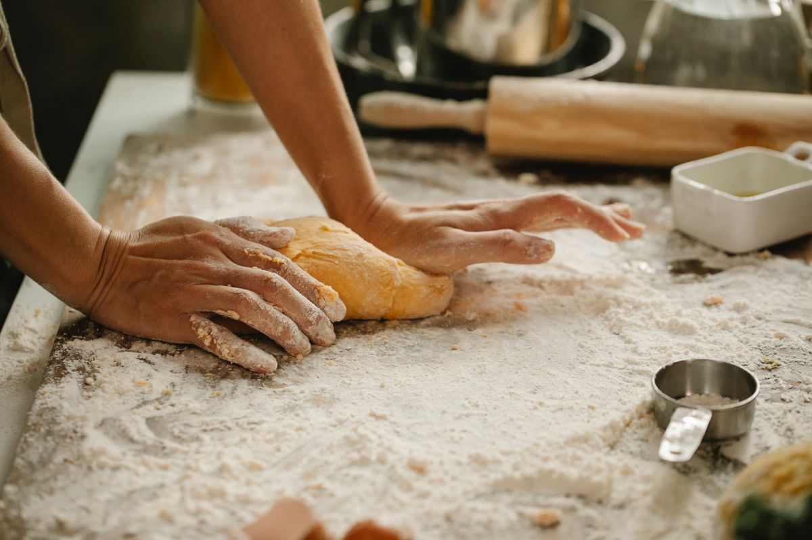
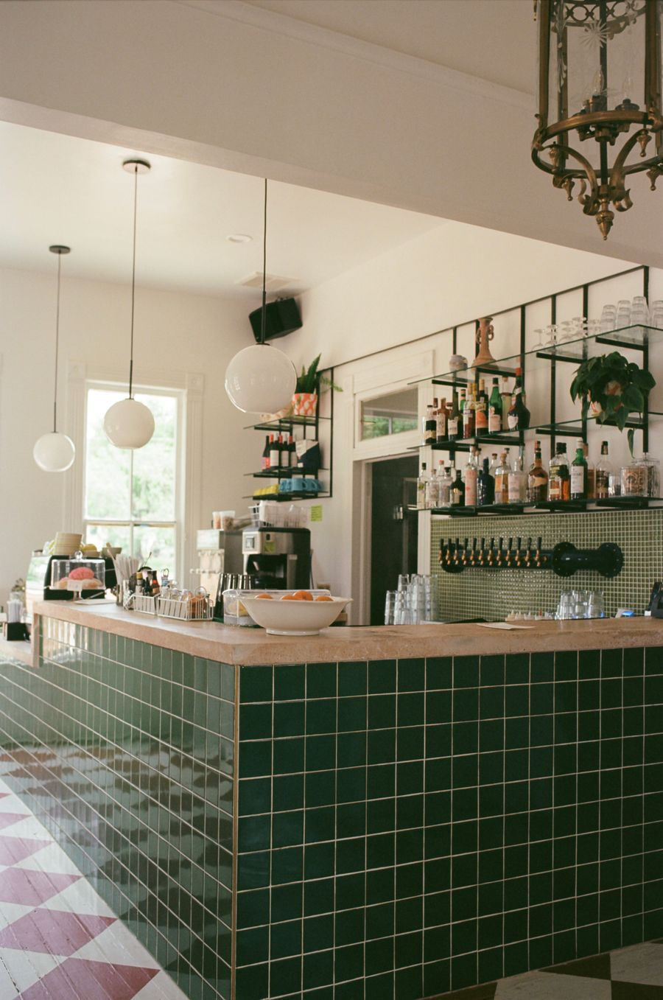
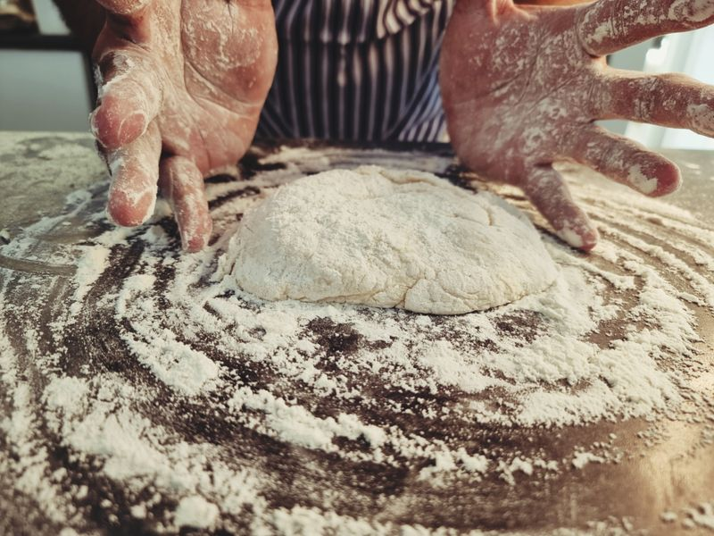
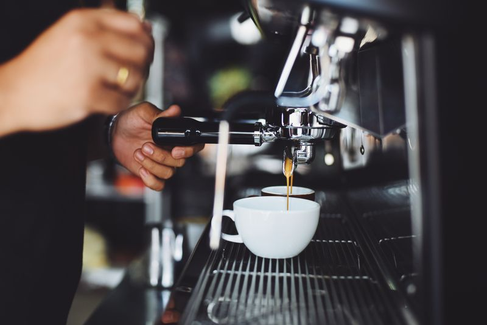
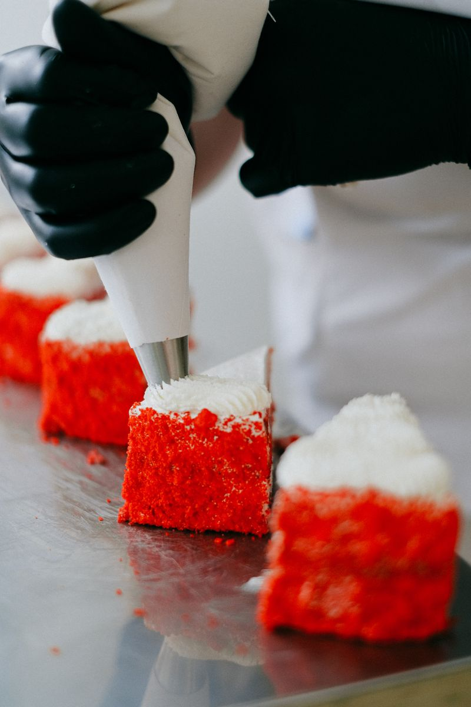

Our Story
One market stall, one cast-iron press and a brioche recipe carried over from Liège. This is how a small family habit became a Brussels morning ritual.

brioche dough
Grandmère's
recipe, our hands
Élise Vandamme grew up in her grandmother's kitchen in Liège, where Sunday meant brioche dough left to rise overnight and pearl sugar melting into cast iron. In 2016 she and her brother Tomas took that recipe to the Saint-Géry market with one borrowed waffle press.
The queue grew every weekend. Three years later they signed the lease on an old lace shop on Rue des Bouchers, kept the tiled floor, and built the house around a row of six antique irons.
Nine years
of mornings
The market stall
A single press and a hand-painted sign at the Saint-Géry weekend market. Liège waffles only, sold out by noon.
Rue des Bouchers
The first house opens with 22 seats in a former lace shop. Brussels waffles and the savoury menu join the line-up.
Order ahead
Pick-up and nearby delivery launch, so office mornings and birthday tables could have warm waffles too.
The terrace
We take over the courtyard next door: 40 seats inside and out, plus a private room for events.
1,200 a day
Still poured by hand, still never reheated. The 48-hour dough rest hasn't changed a minute.

“Six antique irons,
— Élise, head baker
one very old recipe.”
Three rules
of the house
Simple promises we make to every guest, and keep on our busiest Saturday.
Slow dough
Our brioche rests for 48 hours. Belgian butter, free-range eggs, and pearl sugar from Tienen.
Made to order
Nothing waits under a heat lamp. Every waffle comes off the iron for you and goes straight to the table.
Local first
Cream from Pajottenland, chocolate from a Brussels chocolatier, fruit from the Thursday market.
Who's behind
the iron

ÉVÉlise Vandamme
Co-founder & head baker. Keeper of grandmère's notebook.

TVTomas Vandamme
Co-founder. Runs the floor, the coffee and the terrace playlist.

NANadia Achour
Pastry chef. The mind behind the speculoos and every seasonal special.